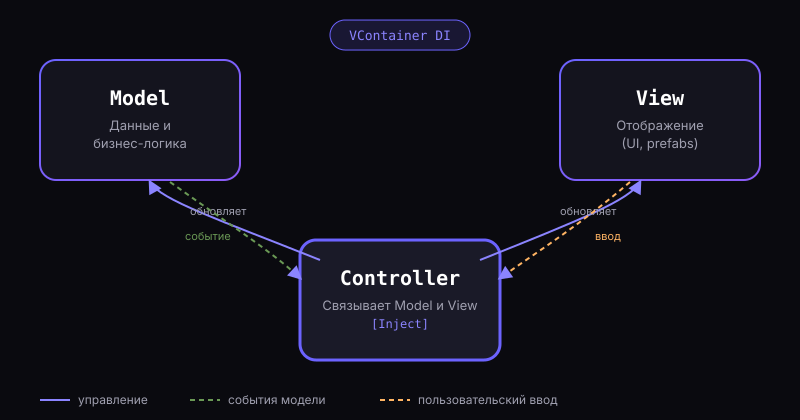

Иван Петров — Unity Developer
«Строю игры так, чтобы их было легко поддерживать и масштабировать»
Junior Unity-разработчик с инженерным складом ума. Мне интересна не просто механика, а то, как она устроена внутри: архитектура, паттерны, читаемый и тестируемый код. Изучаю DI-контейнеры, асинхронность и ECS, чтобы писать масштабируемые игровые системы. Уже прошёл путь от «спагетти-кода» до осознанного проектирования — и продолжаю расти.
Проекты
От pet-проектов и геймджемов до коммерческой разработки в команде. Каждый проект — это конкретные архитектурные решения и опыт.
PSX-Horror
Технический стенд-шаблон для 3D-хоррора в эстетике PSX. Цель проекта — обкатать архитектурные решения, которые легко переносятся в реальные игры: MVC, DI, пулы объектов.
Архитектура: MVC

Структура проекта
Assets/ ├── Scripts/ │ ├── Models/ │ │ └── PlayerHealthModel.cs │ ├── Views/ │ │ └── PlayerHealthView.cs │ ├── Controllers/ │ │ └── PlayerHealthController.cs │ ├── DI/ │ │ └── GameLifetimeScope.cs │ └── Utils/ │ └── ObjectPool.cs ├── Prefabs/ └── Scenes/
Пример: DI через VContainer
// Контроллер получает зависимости через конструктор, // а не через синглтоны — это упрощает тестирование public class PlayerHealthController { private readonly IPlayerHealthModel _model; private readonly PlayerHealthView _view; [Inject] public PlayerHealthController( IPlayerHealthModel model, PlayerHealthView view) { _model = model; _view = view; _model.OnHealthChanged += HandleHealthChanged; } private void HandleHealthChanged(float value) => _view.UpdateHealthBar(value); }
Реализованные паттерны и решения
- Разделение ответственности через MVC
- Внедрение зависимостей (DI) с помощью VContainer
- Object Pool для переиспользования врагов и эффектов
- Анимации через DOTween вместо ручных корутин там, где это уместно
- Событийная модель вместо прямых ссылок между компонентами
- Асинхронная загрузка сцен и ресурсов через корутины
Инквизитор
Игра, созданная за 48 часов на геймджеме. Главный вызов — успеть реализовать рабочий ИИ и систему сохранений в жёстко ограниченное время.
Играть прямо в браузере
Описание и механики
Игрок расследует дело в мрачном сеттинге инквизиции. ИИ противников построен на простой, но надёжной конечной стейт-машине (State Machine): Idle → Patrol → Chase → Attack. Прогресс и настройки сохраняются локально через сериализацию в JSON. Главная сложность геймджема — уложить архитектуру ИИ и систему сохранений в 48 часов без потери качества кода.
Сердце Урала
Ритм-RPG, разрабатываемая в составе команды. Коммерческий проект с полноценным процессом разработки: код-ревью, ветки, релизные циклы.
Видео проекта
Моя роль в команде
Отвечал за реализацию игровых механик ритм-системы и интеграцию UI прогрессии персонажа. Работал в связке с гейм-дизайнером и художником, синхронизируя логику с визуальным рядом.
- Разработка веток в Git, оформление pull request'ов
- Прохождение код-ревью и работа с фидбеком тимлида
- Интеграция ассетов художников в рабочие сцены
- Отладка и профилирование производительности на мобильных устройствах
Танчики
Мой первый проект в Unity. Показываю его открыто — как честный пример того, с чего я начинал, и как изменился мой подход к коду.
Было (спагетти-код)
// Всё в одном MonoBehaviour, жёсткие связи, // приведения типов через GetComponent на каждый чих public class Tank : MonoBehaviour { public int health = 100; public GameObject bulletPrefab; void Update() { if (Input.GetKeyDown(KeyCode.Space)) { var b = Instantiate(bulletPrefab); b.GetComponent<Rigidbody>().velocity = transform.forward * 10; } if (health <= 0) GameObject.Find("UI") .GetComponent<UIManager>() .ShowGameOver(); // прямая жёсткая связь } }
Стало (чистый код)
// Модель танка не знает про UI и ввод, // оповещает подписчиков через событие public class TankModel { public event Action OnDestroyed; private int _health = 100; public void TakeDamage(int amount) { _health -= amount; if (_health <= 0) OnDestroyed?.Invoke(); } } // Контроллер подписывается на событие и решает, // что с ним делать — например, сообщить UI [Inject] public TankController(TankModel model, IUiService ui) { model.OnDestroyed += ui.ShowGameOver; }
Почему архитектура важна
В «Танчиках» любое изменение ломало соседние системы — код было страшно трогать. Переход на разделение ответственности, события вместо прямых вызовов и DI избавил от хрупких связей: теперь новую фичу можно добавить, не боясь сломать остальное. Это разница между «код работает» и «код, с которым можно работать».
Чем я могу быть полезен
Для инди-студии
Готов брать на себя реализацию игровых механик и систем от прототипа до релиза.
- Быстрое прототипирование игровых механик
- Читаемая архитектура, которую легко расширять
- Самостоятельная отладка и оптимизация производительности
- Открытость к код-ревью и парному программированию
Для заказчика
Помогу довести коммерческий проект от идеи до рабочего билда без лишних рисков.
- Прозрачная коммуникация и оценка сроков
- Код, который переживёт смену исполнителя
- Опыт работы в команде с код-ревью и Git-flow
- Готовность разбираться в существующей кодовой базе
Обучение и развитие
Честная оценка текущего уровня и план развития на ближайшее время.
Текущий уровень
Изучаю сейчас
- UniTask — асинхронность без сборки мусора
- Addressables — управление ресурсами и загрузкой
- Unity ECS / DOTS — производительность на больших масштабах
Планы на развитие
- Участие в 2-3 коммерческих проектах как middle-разработчик
- Глубокое изучение сетевого кода (Netcode / Mirror)
- Постройка pet-проекта на чистом ECS-подходе
- Регулярные код-ревью с более опытными разработчиками